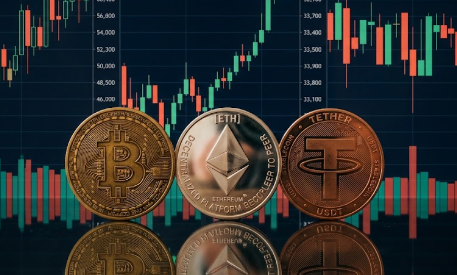

CRYPTOCURRENCY DAN MATA UANG FIAT


oke, disini kita akan mulai dengan pengenalan dasar yaitu APA ITU CRYPTOCURRENCY?
dan apa yang membuatnya berbeda dari mata uang konvensional?
CRYPTOCURRENCY DAN MATA UANG FIAT
Cryptocurrency (kripto) adalah mata uang digital yang menggunakan teknologi kriptografi sebagai pengaman
transaksi dan pengatur pembuatan unit barunya.
Berbeda dengan uang konvensional (seperti Rupiah atau Dolar), cryptocurrency bersifat desentralisasi,
artinya tidak dikontrol oleh bank sentral, pemerintah, atau lembaga perantara mana pun.
| Nama | Simbol | Fungsi Utama | Tahun Diciptakan | Deskripsi Singkat |
|---|---|---|---|---|
| Bitcoin | BTC | Mata uang kripto pertama dan dianggap sebagai aset penyimpan nilai digital. |
2009 | cryptocurrency pertama dan paling terkenal |
| Ethereum | ETH | Platform blockchain yang mendukung aplikasi terdesentralisasi (dApps) dan smart contract. |
2015 | platform smart contract terdepan |
| Tether | USDT | Stablecoin yang nilainya dipatok 1:1 dengan Dolar AS untuk menjaga stabilitas nilai. |
2014 | stabilitas nilai yang kebal terhadap volatilitas pasar kripto. |
| Lebih Lengkapnya: CoinMarketCap | ||||
Gmabar Bitcoin, Ethereum, dan Tether
